Das Hafenbüro
Guten Tag. Womit fangen wir heute an?
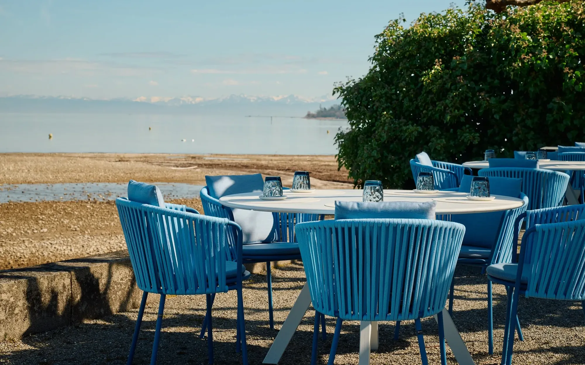
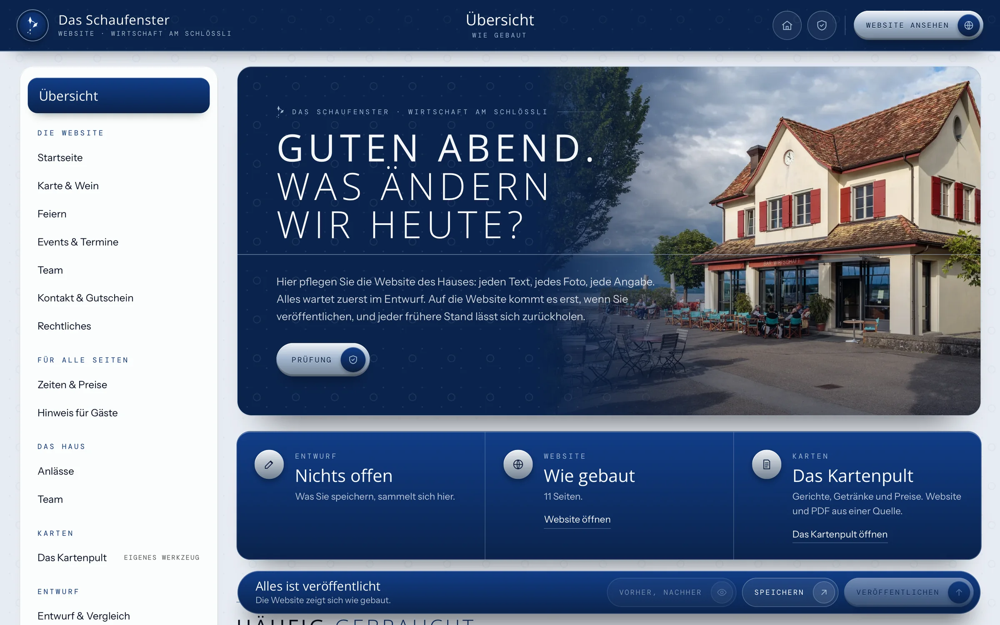
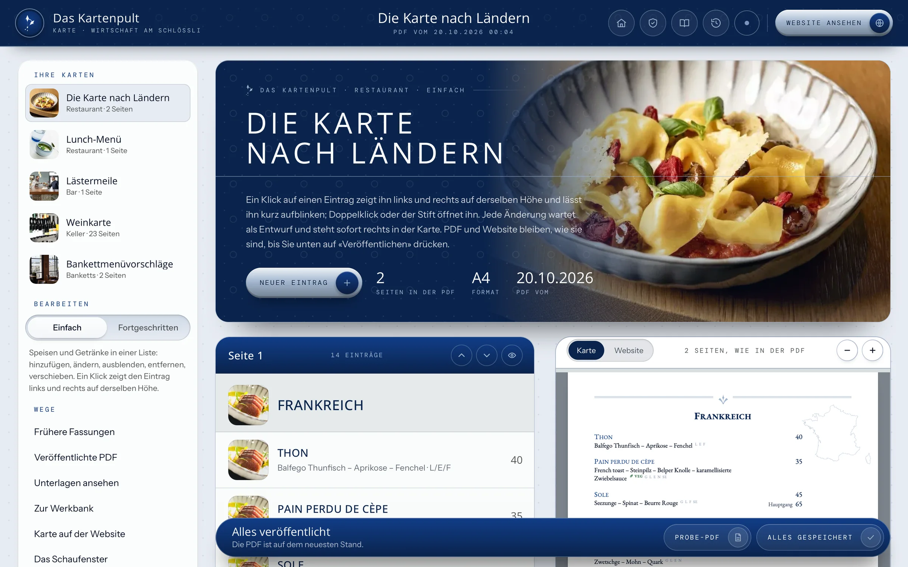
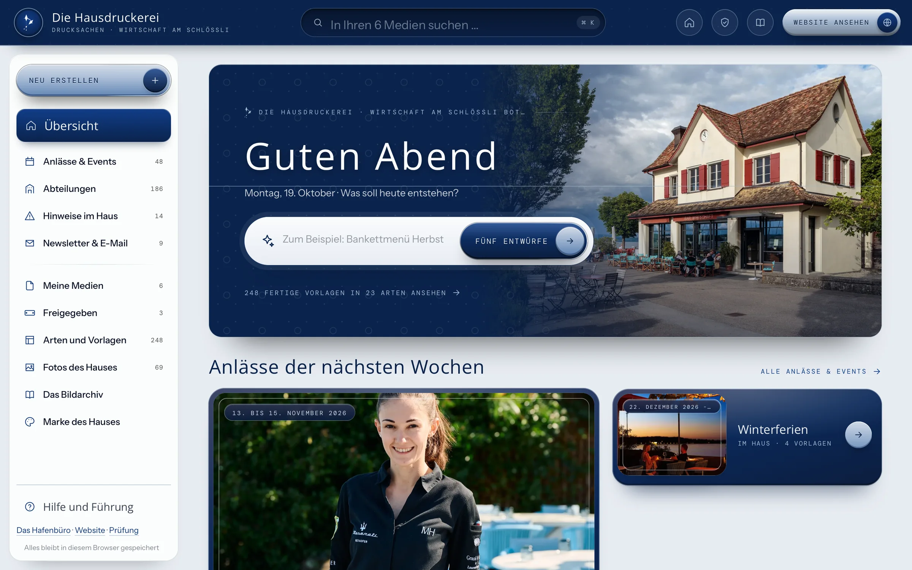
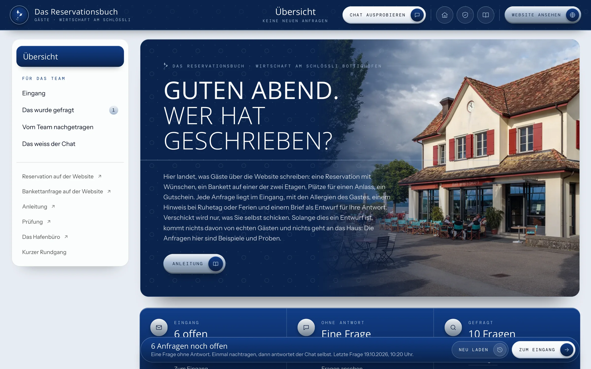
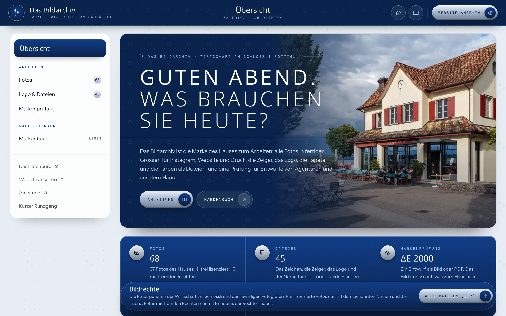
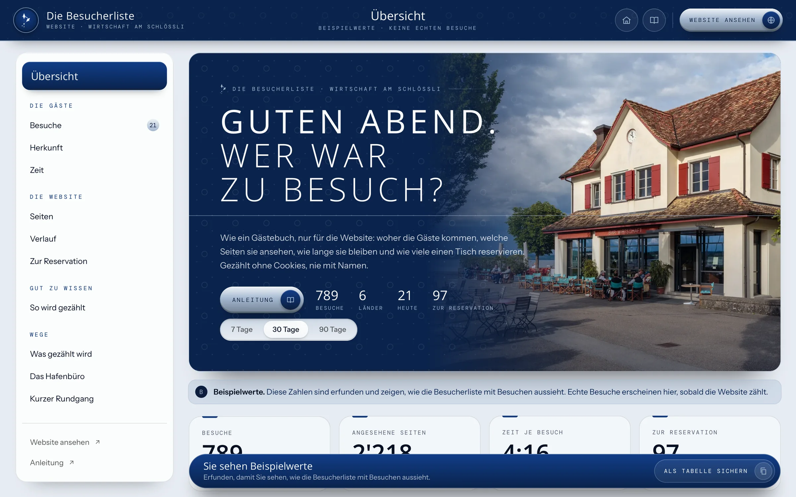
Heute–Besuche–zur ReservationBeispielDie Besucherliste öffnen
Ein Klick oder die Taste 1 bis 6 öffnet das Werkzeug. Darunter stellt sich jedes einzeln vor.
N° 1 von 6 · Website pflegen
Das Schaufenster
Die Website des Hauses zum Anfassen: Texte, Fotos, Öffnungs- und Küchenzeiten, Ferien und Hinweise, Seite für Seite.
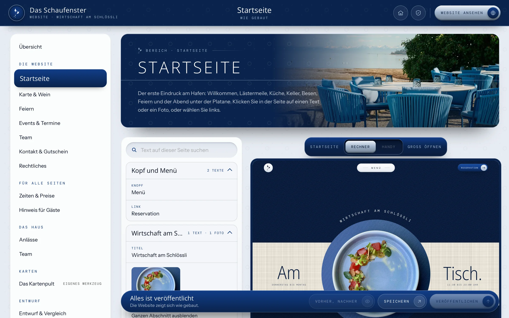
So geht’s
Text oder Foto ändernLinks den Bereich wählen, in der Seite rechts auf einen Text oder ein Foto klicken, neu schreiben oder Foto tauschen, dann Speichern.
Zeiten und HinweisUnter Zeiten & Preise stehen Öffnungs- und Küchenzeiten einmal für alle Seiten. Ferien oder ein geschlossener Tag gehen unter Hinweis für Gäste.
Online stellenGespeichert ist erst ein Entwurf. Vorher, nachher zeigt den Unterschied, Veröffentlichen bringt ihn auf die Website. Die Karten pflegt das Kartenpult.
N° 2 von 6 · Karten und Preislisten
Das Kartenpult
Die Karten des Hauses, von der grossen Karte bis zur Lästermeile und zum Wein. Ein Knopf setzt die neue PDF, die Website folgt.
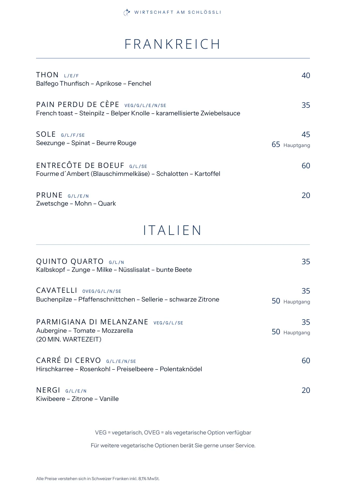

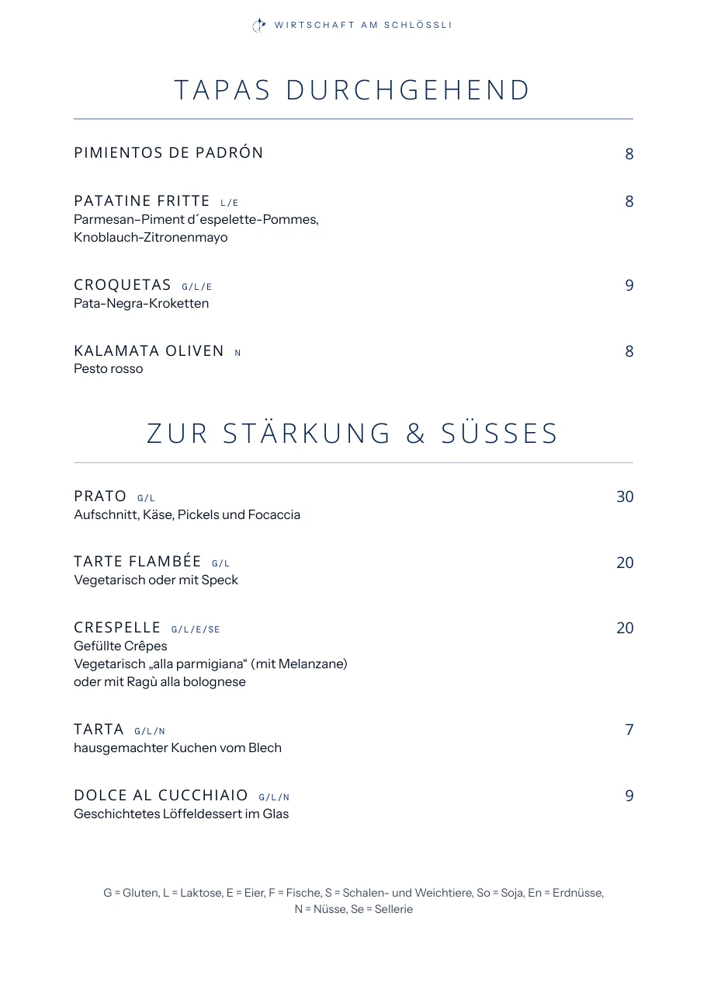
So geht’s
Gericht oder Preis ändernDie Karte wählen, im Modus Einfach den Eintrag anklicken, Name, Beschreibung oder Preis überschreiben. Daneben steht sofort die Karte.
Neues GerichtMit Neuer Eintrag oder bei der Rubrik mit Eintrag hinzufügen anlegen und an die richtige Stelle schieben.
Vorübergehend wegGibt es ein Gericht gerade nicht, nehmen Sie es mit Ausblenden heraus. Es bleibt gespeichert und kommt später zurück.
Neue Karte druckenProbe-PDF zeigt die Karte vorab, Veröffentlichen setzt die PDF neu. Die Karten auf der Website kommen aus derselben Quelle.
N° 3 von 6 · Drucksachen und Beiträge
Die Hausdruckerei
Tischkarten, Aushänge, Gutscheine und Beiträge im Stil des Hauses, aus fertigen Vorlagen und ohne Grafikprogramm.
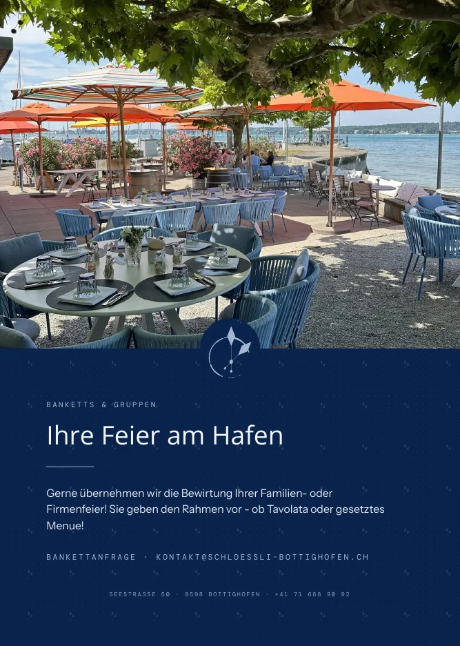
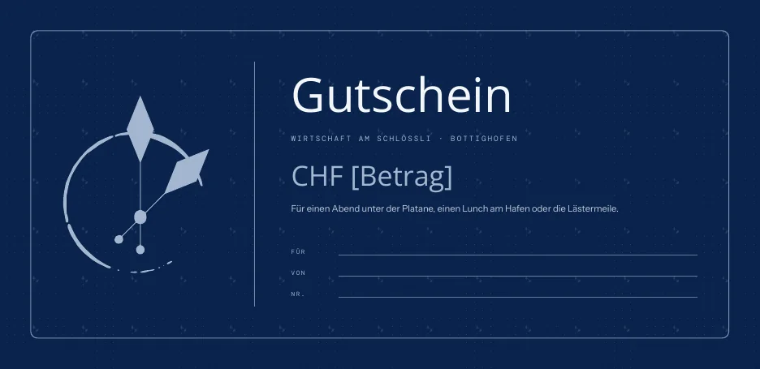
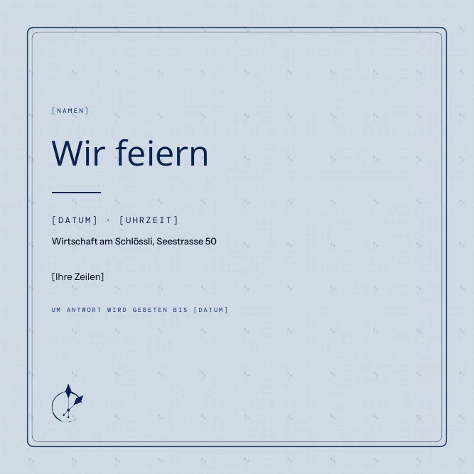
So geht’s
Sagen, was Sie brauchenOben einen Satz schreiben, etwa: Aushang für den Ruhetag, und Fünf Entwürfe drücken. Oder unter Arten und Vorlagen eine der fertigen Vorlagen mit Texten des Hauses nehmen.
Einen Entwurf wählenSie bekommen fünf Entwürfe im Stil des Hauses. Den passenden anklicken.
AnpassenIm Blatt auf einen Text oder ein Foto klicken und ändern. Unter Fotos des Hauses liegen alle Bilder der Website.
DruckenDruckfertig als PDF speichern, mit Beschnitt für die Druckerei, oder selbst drucken.
N° 4 von 6 · Gästen antworten
Das Reservationsbuch
Reservationen, Bankette, Anlässe und Gutscheine aus den Formularen der Website, je mit einem Brief im Ton des Hauses. Dazu ein Chat, der Gästen aus Ihren Seiten und Karten antwortet.
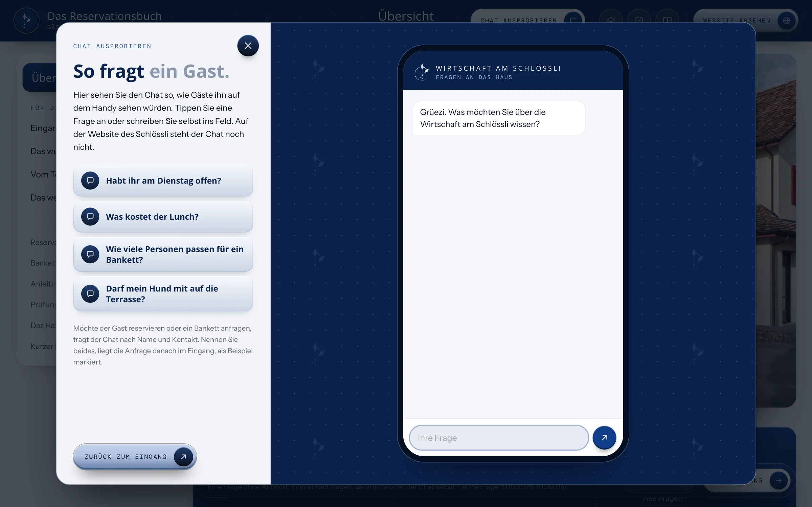
So geht’s
Anfragen beantwortenReservation, Bankett, Anlass oder Gutschein: jede Anfrage aus den Formularen der Website steht im Eingang, mit Hinweisen zu Ruhetag, Ferien und Allergien und einem Brief im Ton des Hauses. Text kopieren oder Als PDF speichern, verschickt wird nur, was Sie selbst schicken.
Den Chat ausprobierenMit Chat ausprobieren fragen Sie wie ein Gast und sehen, was er aus Ihren Seiten und Karten antwortet.
Lücken schliessenWusste der Chat etwas nicht, steht die Frage unter Das wurde gefragt. Mit Antwort nachtragen einmal eintragen, ab dann antwortet er selbst.
N° 5 von 6 · Marke und Bilder
Das Bildarchiv
Die Marke des Hauses zum Arbeiten, für Sie und für jede Agentur: Fotos, Wortmarke, Zeiger, Schriften und Farben.
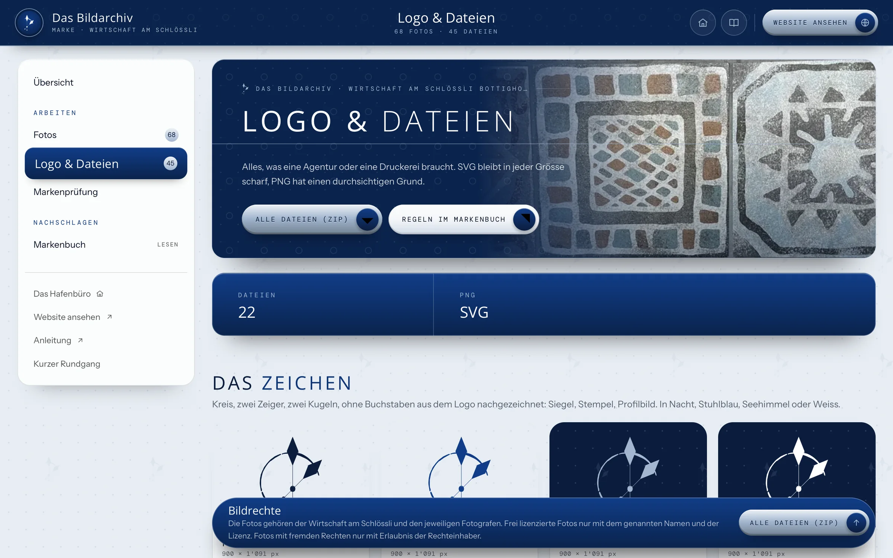
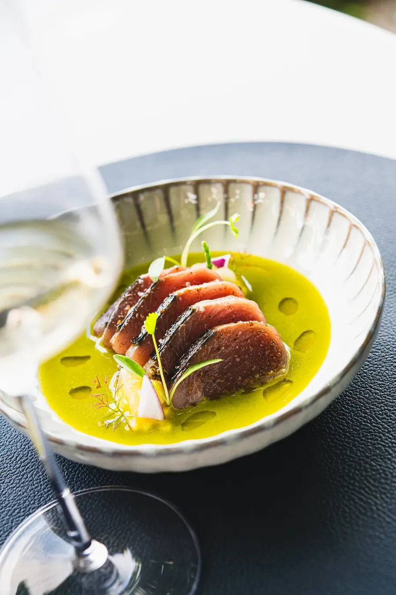
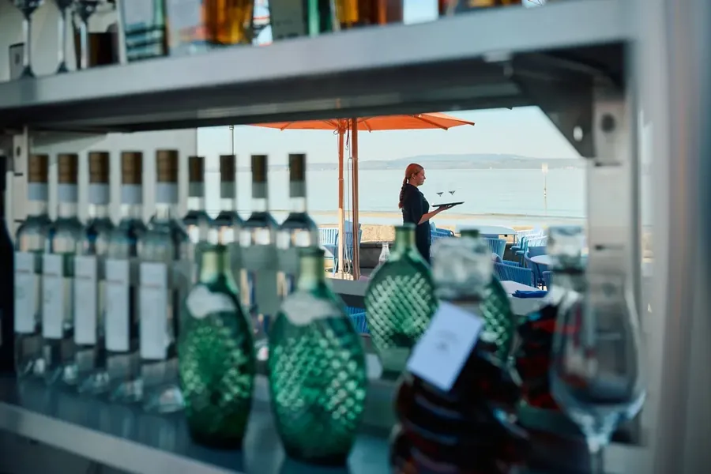
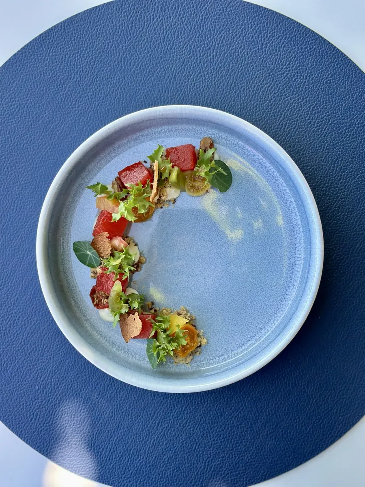
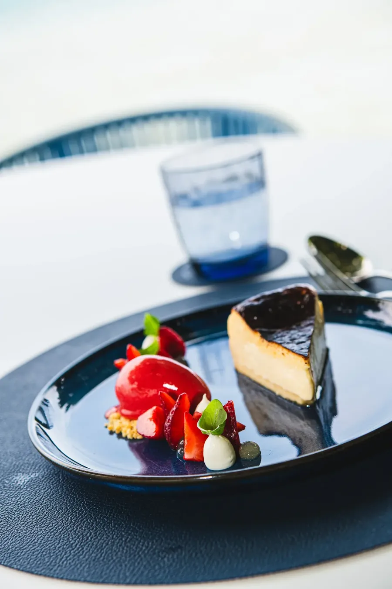
So geht’s
Ein Foto holenUnter Fotos ein Foto anklicken und die Grösse wählen: Instagram-Beitrag, Website oder Druck. Jedes Foto trägt seine Herkunft.
Wortmarke weitergebenUnter Logo & Dateien liegen Wortmarke, Zeiger, Farben und Schriften. Alle Dateien (ZIP) gibt alles in einem Paket an Agentur oder Druckerei.
Einen Entwurf prüfenIn der Markenprüfung mit Datei wählen ein Plakat oder einen Flyer laden. Sie sagt Punkt für Punkt, was zum Haus passt.
- Nacht#0B1D3D
- Tief#0A234C
- Stuhlblau#113D88
- Kalk#E7ECF3
- Kalk tief#D0DAE7
- Papier#F3F6F9
- Seehimmel#A2B6CF
- Seehimmel hell#C5D2E1
- Seehimmel tief#0F3678
- Tinte#041023
N° 6 von 6 · Besuche der Website
Die Besucherliste
Wer Ihre Website besucht: woher die Gäste kommen, was sie sich ansehen und wie oft es weiter zur Reservation geht.
So geht’s
Woher die Gäste kommenUnter Herkunft stehen Länder und Orte der Besuche, ohne Cookies und nie mit Namen. Oben wählen Sie den Zeitraum.
Weiter zur ReservationZur Reservation zeigt, wie oft ein Besuch zum Fenster Reservation führt, zu Direkt buchen bei gastronovi oder zu einer Tisch-Anfrage ans Haus.
Zahlen weitergebenAls Tabelle sichern legt alle Besuche als Tabelle ab, zum Beispiel für die Buchhaltung oder eine Agentur.
- –Besucheauf der Website
- –Fenster «Reservation» geöffnet
- –weiter zu gastronovi oder als Anfrage ans Haus
- ·reserviertzählen gastronovi und das Haus, nicht die Website